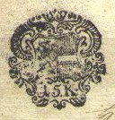
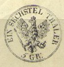
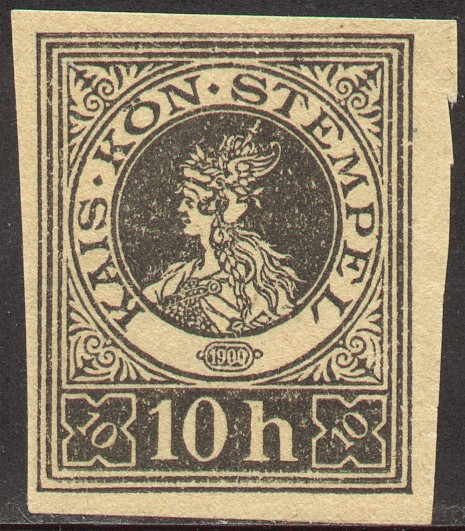
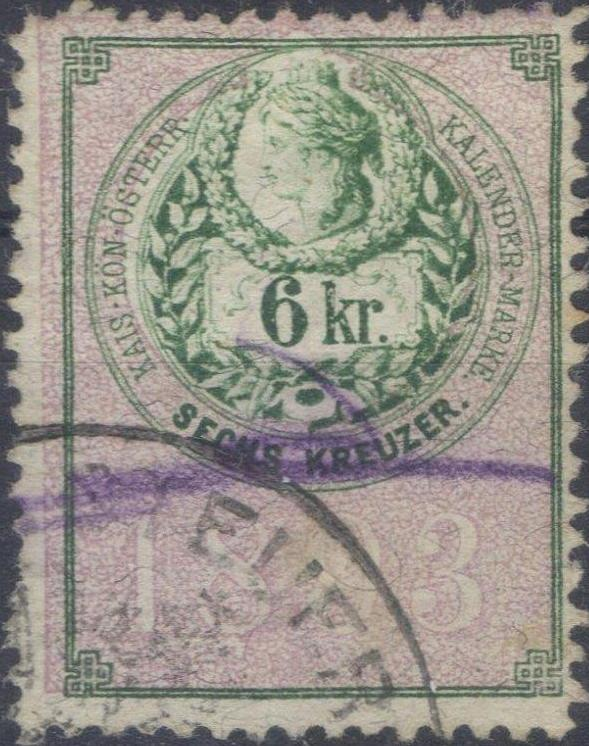
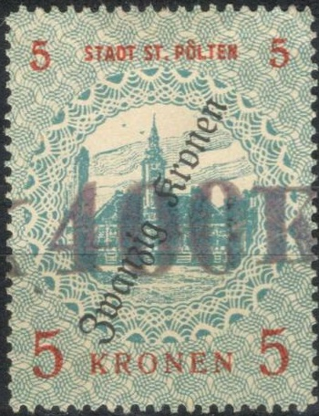

Austria Fiscal stamps, arms type 1850-1893, examples
Return To Catalogue- Austria - Austria Fiscal stamps, arms types from 1850-1893 - Austria Fiscal stamps, Franz Joseph issues - Austria Fiscal stamps, eagle arms types from 1920-1950
Note: on my website many of the
pictures can not be seen! They are of course present in the
catalogue;
contact me if you want to purchase the catalogue.
I posses a large number of labels dating back to about 1700. I don't know what these are exactly, but they can frequently be found in stamp collections. Examples:



The fiscal stamps of Austria often have the inscription "STEMPELMARKE" or just "STEMPEL".
Austria Fiscal stamps, arms type 1850-1893,
examples


Austria Fiscal stamps, Franz Joseph issues,
example

Austria Fiscal stamps, eagle arms types
from 1920-1950
Some fiscal stamps were used for postal purposes, example (certified genuine):

(Postally used fiscal stamp)

In this design I have seen many values, also printed in two
colours. These are imprinted revenues on documents. I've seen
them with the year "1900" and "1916".

Label(?) with 'KAIS. KON STEMPEL ZEHN HELLER 1899'
(Reduced size)
"K.K.RECHNUNG-STEMPEL", two different types


Not sure what these "E.A.D." are, 500 K blue with
violet border, with "Deutsch Osterreich" overprint and
further "10.000 K" surcharge. Also a similar 500 K with
yellow border.

"K.K.STATISTISCHE GEBÜR", 1891 issue, 2 k, 5 k and 10
k all in orange and black. In 1894 the values 2 k green and
black, 5 k red and black, 10 k blue and black and 50 k yellow and
black were issued.
"K.K.STATISTISCHE GEBÜR", (no "H" in
"GEBUR"). 1898 in Heller/Kronen value: 4 h green and
black, 10 h red and black, 20 h blue and black, 1 k yellow and
black.
 .
.
"K.K.STATISTISCHE GEBÜHR" (with "H" in
"GEBUHR"), 12 h red and black, issued in 1907.
I've seen the "GEBUHR" stamps overprinted in "KRONEN":

200 K on 4 h orange and black. I've also seen 100 K on 4 h green
and black and 5 K on 20 h blue and black.

"K.K.ZWISCHENVERKEHRS- STATISTISCHE GEBUR." 10 h red.

The first "KALENDER MARKE" was issued in 1850 for
almanachs, here shown one from 1888 and another from 1893.
'Declarations - Abgabe' , double headed eagle,


"h 34 h", I've also seen a 10 h in the same design and
colours. I've also seen a 17 2/ Kr. in the same design and
colours which was apparently issued in 1898.


1922/1923: Roman god Bacchus: "SCHAUMWEIN STEUER"
20.000 Kr blue and red

"1925" issue
Inscription "1922" at the
bottom:
I've seen 400 Kr, 3000 Kr, 4000 Kr, 20.000 Kr, 40.000 Kr (all in
blue and red).
Also "10.000" on 900 K blue and red
Inscription "1925" at the bottom:
50 g, 80 g (all in red and blue).
More sparkling wine tax stamps were issued on the fiscal stamps of Bosnia:

Example of a spakling wine tax stamp on a fiscal stamp of Bosnia.
 
Stadt St.Polten.
'Austria Revenues' issued by J.Barefoot Ltd.
'Forbin Catalogue' 1915
{kind=link}
{kind=link}
{kind=link}